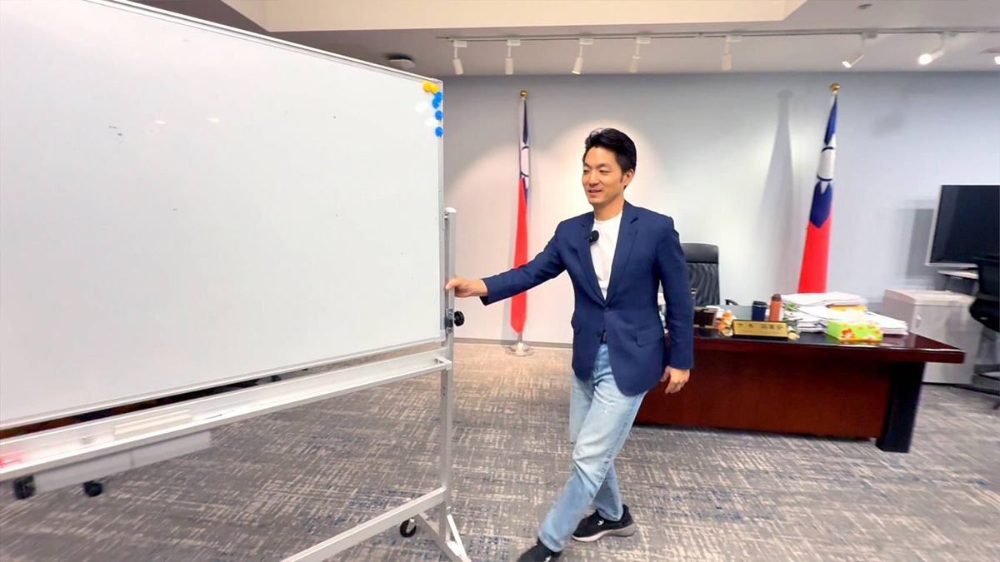
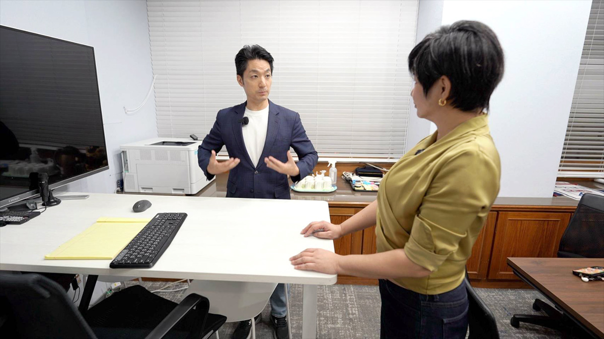

他的城市考題
蔣萬安
習慣把答案整理清楚的人，能面對沒有標準答案的台北嗎？
◎ 報導／呂佳頴
◎ 攝影／柯勝雄
他的城市考題
◎ 報導／呂佳頴
◎ 攝影／柯勝雄
2026年10月
國慶連假的台北市長室
一個一路被視為「人生勝利組」的人，碰到波折會怎麼辦？10月國慶連假那天，走進台北市政府時，我腦袋裡想的是這件事。
國慶連假，台北市政府幾乎沒有人，長長的走廊顯得安安靜靜。選舉已經進入倒數，蔣萬安卻約《佳頴Ｔ政步》在市長室採訪。我心裡納悶：不用跑攤嗎？一推門，蔣萬安正在和市府的發言人、副發言人開會。他說，前面幾個行程之間有空檔，就回來討論事情。
桌上放了一張又一張圖，討論的是松山機場遷移， 一個題目裡塞了好多題，包括產業、交通、住宅、綠地、航高限制⋯⋯不時聽到蔣萬安一直問：這張圖能不能再清楚一點？交通放哪裡？住宅呢？產業呢？怎麼讓市民一眼就看懂？我聽了一會兒慢慢發現：他在意的，不只是「我有什麼政策」，還有另一件事。
▲ 趁著國慶連假，蔣萬安利用跑攤空檔，在市長室和幕僚開會，如何把松機遷移的議題，做成簡單易讀的懶人包和影音，傳遞給民眾。（圖／柯勝雄攝）
講著講著，蔣萬安突然站起來，把旁邊的白板拉過來。我忍不住開口：「你們就讓他自己拉喔？」幾個幕僚笑成一團，但他沒理會我們，拿起筆開始寫。
時機、條件、目的，松機如果遷移，土地怎麼用？產業用地多少？住宅多少？綠地多少？內湖交通怎麼打通？ＡI產業怎麼進來？北台灣幾個縣市怎麼串？白板上寫完，再回頭要求發言系統：把資訊變成圖卡、說帖、影片，讓大家很快看懂。他說：「這是你們的專業。」
「你會不會跟他們說，我明天就要看到新方案？」我問。他立刻說：「沒有，我沒有叫他們馬上，我們需要給一點時間。」話才講完，旁邊幕僚默默冒出一句：「好了，好了，知道了。」全場大笑。
「東西做好，市長還會看。」副發言人說，他看完還會問，哪裡可以更好，哪裡需要再改，蔣萬安不是丟出方向就轉身離開，他會一直待在旁邊，直到覺得，答案夠完整了。

▲ 蔣萬安和幕僚開會習慣寫板書做總結，這次採訪便目睹他親自拉白板。（圖／柯勝雄攝）
在蔣萬安眼裡，松山機場遷移是一個大型的「total solution」。在他的藍圖裡，松機搬走，航高限制打開，交通、住宅、綠地、產業、土地，都得到一次重新解題的機會。
這張圖很大，所以我開始一題一題往裡面問。AI園區到底要放什麼？企業總部？演算法新創？資料中心？晶片設計？因應不同的規畫，還需要的電力、土地、基礎設施都不同，這時，他說要做總部。
再問交通。松山機場一搬走，航高限制解除，就可以多蓋橋、打通道路嗎？可是工程上還有水位、落墩等問題怎麼辦？蔣萬安覺得，工程技術可以克服很多事。
接著問便利性。松山機場真的搬遷後，那黃仁勳以後坐專機來就要停桃園機場嗎？他說，機捷和五楊高架到台北只要36分鐘。
再問綠地。蔣萬安說，松機北側規劃大片綠地。但有些台北人在意的，未必只是全市多了多少公頃綠地。而是：我每天走過會看到的那棵樹為什麼不見了？
我問：「為什麼台北一直被質疑砍樹？」他談褐根病（俗稱「樹癌」）、談公安和交通安全。談這些都是專業評估，同時談台北也持續種樹。我問：「可是小樹要很久才會長大。」他承認。然後，又回到要增加綠地。
一路問下來，我開始發現一件事。問題可以從不同地方進去討論，但蔣萬安到最後，常常會走回那張大圖，這似乎就是他解題的方法，先把問題放進一個系統裡，然後說：我有想過，我有做，而且這些事情是彼此連在一起的。
後來聊到選舉。我問他：「有人說你問A答B呢？」他的反應幾乎是立刻的。「我如實，一項一項地說⋯⋯」他反應得很快，甚至有一點委屈。他說，不管在議會還是每天面對媒體，他的態度都一樣，不能不看事實，就隨便替人扣帽子⋯⋯他最後一句補充：「事實勝於雄辯。」
聽到這裡，突然可以把前面那場會議接起來。為什麼他要自己拉白板？為什麼要一直改圖？為什麼資訊一定要整理得清楚？因為他真的很在意一件事：我有沒有把它說清楚。
「政治溝通」有時候很奇妙！一個人覺得自己已經把答案講得很完整，另一個人卻可能仍然覺得：你沒有回答我真正想問的事，這不是誰有沒有說話而已，是兩邊認定的「問題」，可能根本不一樣。

▲ 蔣萬安辦公室有個角落，設計成高桌。他說偶爾要站著辦公，伸展身體。（圖／柯勝雄攝）
我又問蔣萬安：什麼事情會讓你真的難過？他提到營養午餐爭議。談到有人用「食物中毒」的說法，但科學檢驗數據並不是如此，他覺得這是傷害第一線學校、家長志工和基層同仁。
說到這裡，他原本很快的語速慢了一點：「我覺得很難過。」那最近好不好睡？他說每天一個行程接一個行程，累到倒頭就睡。但說著說著，他開始講這四年做了什麼：大巨蛋、輝達、鮮奶、公館圓環。「這些一定要讓大家知道。」事情做了，所以要把它講清楚。
接著，問「身世」這件事。會不會覺得已經這麼多年了，怎麼還在談「身世」？他說，這從第一次選舉，就一路跟著他。然後，開始講育兒、托嬰、生生喝鮮奶、營養午餐、兒童醫療、長輩照顧等做了什麼。蔣萬安說，市民最後看的是市長有沒有做事。
問難過，回到做了什麼；問身世，回到做了什麼；問「問A答B」，回到事實。一路問下來，一組固定的座標浮現出來：那就是事實、執行、成果。這幾個座標，有點像蔣萬安理解外面世界的方式，也可能是他安定自己的方式。
如果真的選輸了呢？我又丟了一題。「沒有人想輸，但如果不小心真的這樣，怎麼辦？」他說：「如果市民希望台北持續穩健往前，就跟著台北隊，朝已經擘劃的藍圖繼續向前。」我再確認：「這是你想跟原本支持你的人，或還在猶豫的人說的話？」
他說：「對，我們繼續努力。」這瞬間很有意思。因為當問題走到一個他不想接受、也尚未發生的結果時，他沒有跟著問題走，是回到自己熟悉的位置，繼續努力、繼續做、繼續往前。
▲ 蔣萬安說行程多到一躺上床，就累到馬上睡著，和以前比起來，現在反而「很好睡」。（圖／柯勝雄攝）
訪問最後，我玩了一個遊戲。上次訪問沈伯洋，我請對方替自己做Ending。這次，我說：「現在你是呂佳頴，我是蔣萬安。」請他站在主持人的角度，替今天的訪問做結論，他點點頭。一開口：「很高興透過這個時段，跟大家分享過去我們推動的⋯⋯」我立刻打斷：「等一下。」「你這個看起來還是蔣萬安，不是呂佳頴。」
他愣了一下：「所以，我要做節目主持人？」「對啊。」再來一次。這次，他開始替「蔣萬安」做總結。說很多事情從被認為不可能，到一步一步完成；說台北隊「勇敢開路、化不可能為可能」。我再加一道題：「你今天採訪了蔣萬安，你覺得他是一個什麼樣的人？」這一次，他真的站到外面看自己了，他的答案是：「有決斷、有魄力、有執行力的市長。」
這就是蔣萬安眼中的蔣萬安。接著，他又把大巨蛋、公館圓環、鮮奶、輝達，再講了一次。最後替自己下了一句註解：「該做的事情勇敢去做，對的事情就要堅持。」
一個一路被視為「人生勝利組」的人，碰到波折會怎麼辦？這是我一開始的問題，採後這天看下來，蔣萬安沒有突然變成另一個人。外面局勢已改變，選舉變得更激烈了，他仍然利用行程空檔回市府開會。
圖不夠清楚，就自己拉白板；話覺得還沒講完，就再講一次。當他面對不確定時，不會突然換一套不熟悉的打法，會回到自己最熟悉的圈圈，聚焦準備、整理、執行、修正，然後再把答案講清楚一次。
這是他的穩定，也是他的考題，因為台北不是一張白板，有些問題可以拆解，有些問題可以用數據說明，有些政策也真的可以一版一版修改，直到更完整。
可是城市裡還有另一些東西：感受、不耐煩、不信任、價值衝突，以及一群即使聽完所有資料，仍然可能有不同意你的人。以上這些東西不一定能被整理成一張漂亮的圖，也不一定因為「我都有答」，就真的被回答了。
白板上的字，可以擦掉重寫；圖卡不夠好，可以再改一版。但選民心裡的答案，很難由市長自己定稿。台北人想知道的應該是，當城市已經不是他最熟悉的那一道題時，他能不能感受到題目變了？

看見缺口的人，能從台北的各種「可是」裡找到方向嗎？

會維修城市的人，能想像「城市」嗎？

跑遍新北的人，能不能把腳印走成方向？

擅長管理複雜系統的人，能讓快速長大的桃園產生共同方向嗎？

熟悉制度的法律人，能找回「消失的4分鐘」嗎？

看懂產業布局的人，能不能看見每一種人的生活？

地方跑得久的人，能不能跑出城市方向？

給答案可以很快，城市治理什麼都能馬上辦嗎？

從競爭中突圍的人，能不能讓不同地方、派系與世代重新走在一起？

直率的真實，能轉換成市民的治理信任嗎？

一路把每一棒跑好的人，能不能跑出自己的路線？
新聞部
副總經理 王結玲
議題研究中心／呂佳頴
採訪中心攝影組／柯勝雄
網路新聞中心／楊致中・談雍雍・吳家瑜
數位事業部
內容策展組／廖玉貞・彭嘉儀・林佳瑤・李佳綺
© TVBS Media Inc. All Rights Reserved.｜聯利媒體股份有限公司